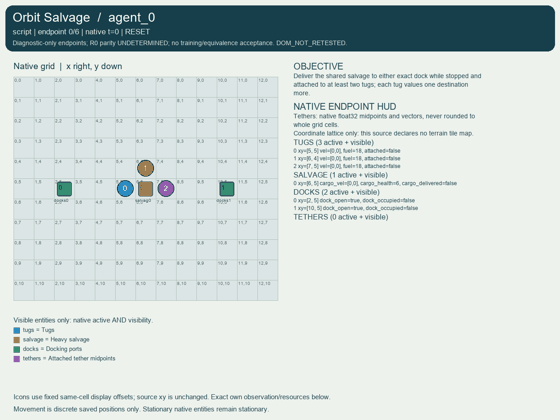
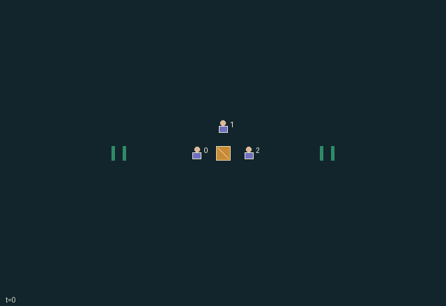

GI178 · Orbit Salvage

Original recording scope: 角色视角 · Mode: 固定脚本演示
Additional generated state replay (different trajectory / full-state debug)

Deliver the shared salvage to either exact dock while stopped and attached to at least two tugs; each tug values one destination more.
Identity and original contract
3 independently actionable roles; 8 discrete commands per role; 44 native observation columns per role; original horizon 96 steps. Declared per-step reward range: -0.3 to 4.0. Observation regime: partially_observable.
Source SHA-256: 05b69a62c906aaabddd68e35bd6c5b8877b664f2dc4595ea1637576418bb451b
The objective, rewards, population, map and horizon remain original. A preview is not a success claim.
Objective and gameplay
Deliver the shared salvage to either exact dock while stopped and attached to at least two tugs; each tug values one destination more.
Attached thrust sums before a mass-two threshold; one tug changes all attached trajectories, fuel demands, damage risk and dock choice.
- Three tugs share a heavy salvage body with bounded integer inertia. Two aligned attached thrusts are needed for one unit of acceleration.
- Action 6 latches or releases before force aggregation; attached offsets move rigidly with the cargo. Fuel and all geometric state are public.
- The assembly resolves first against boundaries and old free-tug cells. Free tugs then avoid the settled assembly and old free-tug positions; contested free targets reject all contenders.
- A two-tug brake can arrest shared momentum. Cargo docks only at an exact port with zero velocity, at least two attachments and an open window.
- Dock values are private. Only each role observation reveals its preferred port; the scene does not expose peers values.
- AUTHOR SOURCE ONLY: native state and scene mappings are supplied, but no replay, animation, causal effect or learning result has been executed.
Ending: Successful docking or zero cargo integrity; success/failure at H takes precedence over truncation.
What this game explores
Information, sensing & communication: Who knows a fact, when it was measured, and whether it was communicated are separate state variables. Test memory or communication using only the same role-visible evidence.
Resource commons & externalities: An action changes a persistent resource or burden that another role also encounters. Compare extraction with maintenance and record the downstream resource trajectory.
Joint transport & shared access: Positions, load geometry, occupancy and persistent access constrain whose action can succeed next. Distinguish physical handoff, shared controls and simultaneous force from a cosmetic cooperation label.
These are questions supported by rule structure, not observed learning effects.
Play it: operating walkthrough
crucibles play --game gi178Keep Python running and open its printed address. Select this game, set a seed and press Create session. The game itself is always English.
Assign a role range to Host with Assign / take over, or Assign all roles. Invite a second participant with Create player invitation, then assign a disjoint subset. Every original role is available.
For every owned role choose a legal command and press Queue. Arrow keys / WASD queue a declared directional action for the current role camera when available. Space or Advance one joint step advances everyone together. Non-directional games use the selectors.
Unqueued roles use the labelled untrained uniform-legal policy. Take over or release roles before the next step without resetting. Full-state debug is privileged and permanently logged; role cameras preserve permissions. Close the session to retain logs. Server restart does not restore sessions.
Complete command reference
IDs and English labels exactly match the manifest. Availability depends on role, resources, location and phase. An available action can still have no productive effect.
0·Coast
1·Thrust west; spend one fuel
2·Thrust east; spend one fuel
3·Thrust north; spend one fuel
4·Thrust south; spend one fuel
5·Brake; spend one fuel
6·Toggle tether at cardinal adjacency
7·Give one fuel to poorest old adjacent peer
Roles and capability identifiers
These original role names describe capabilities, not interchangeable skins. Check each owned role's legal selector before planning handoffs.
agent_0·west tug, private dock preference
agent_1·north tug, independently sampled private dock preference
agent_2·east tug, private dock preference
Information and observation permissions
All geometry, fuel, velocity, attachment, integrity and dock windows are public. Each role sees only its own preferred dock. Visibility matrices are all true for public groups; private_visible is the identity and private values are omitted from scene attributes.
The GIF is full-state debug and may reveal hidden entities or private state. Train on obs[agent], not the picture, state tree or another role's private row. Field slices and visibility are in the original manifest.
Reinforcement-learning integration
import jax
from crucibles_jaxmarl import make
env = make("gi178")
key = jax.random.PRNGKey(0)
key, rk, ak, sk = jax.random.split(key, 4)
obs, state = jax.jit(env.reset)(rk)
actions = env.sample_actions(ak, state)
obs, state, rewards, dones, info = jax.jit(env.step_env)(sk, state, actions)
done = dones["__all__"]Observations are float32 vectors of width 44; actions are scalar int32; masks have 8 entries. Supply all 3 roles each transition. Masked sampling is an engineering reference, not a trained learner.
step_env retains terminal data without reset. step performs outer autoreset and keeps terminal data in info["raw_state"] and info["raw_observation"]. Use dones["__all__"] for episode boundaries; separate completion, failure and time limit in analysis.
JIT or vmap equal identities and shapes. Split independent reset, policy and transition keys. Group different shapes explicitly; do not shrink the population or horizon. Host rendering stays outside training.
Training questions and fair evaluation
Define valid completion from the objective before fitting. Preserve original rewards and also report real deliveries/services, losses, resource state, unresolved episodes and per-role returns. Animation is not a reward signal.
Who knows a fact, when it was measured, and whether it was communicated are separate state variables. Test memory or communication using only the same role-visible evidence.
An action changes a persistent resource or burden that another role also encounters. Compare extraction with maintenance and record the downstream resource trajectory.
Positions, load geometry, occupancy and persistent access constrain whose action can succeed next. Distinguish physical handoff, shared controls and simultaneous force from a cosmetic cooperation label.
Compare memory, communication or centralized critics under matched actor information. Declare critic access; keep actor inputs role-filtered. Match partner/opponent distributions, masks, compute and checkpoint selection. Final tests never enter fitting or selection.
Independent training runs or source-pairing blocks are inferential units; episodes from one policy are not independent training replications. Save hashes, keys, versions, device, time and cost. Negative, zero, failed and indeterminate outcomes are valid. No trained checkpoint or target score is supplied.
Classification and evidence
Overlapping editorial labels are reading aids, not proof of novelty, difficulty, strategic equivalence or learning effects.
- Information, sensing & communication
- Evidence
manifest.task.observation_access: All geometry, fuel, velocity, attachment, integrity and dock windows are public. Each role sees only its own preferred dock. Visibility matrices are all true for public groups; private_visible is the identity and private values are omitted from scene attributes.
- Evidence
scene.rules.4: Dock values are private. Only each role observation reveals its preferred port; the scene does not expose peers values.
- Resource commons & externalities
- Evidence
manifest.task.objective: Deliver the shared salvage to either exact dock while stopped and attached to at least two tugs; each tug values one destination more.
- Joint transport & shared access
- Evidence
manifest.task.objective: Deliver the shared salvage to either exact dock while stopped and attached to at least two tugs; each tug values one destination more.
- Evidence
manifest.task.interaction: Attached thrust sums before a mass-two threshold; one tug changes all attached trajectories, fuel demands, damage risk and dock choice.
- Evidence
manifest.actions.6: Toggle tether at cardinal adjacency
Source, receipts and preview limits
The additional generated state GIF replays saved untrained legal actions through the original kernel. At most 25 actual endpoints include initial and terminal state; no invented interpolation. It is full-state debug, not the role observation. Where an original scene preview exists, it is displayed first with its own recorded information scope. The two recordings may use different trajectories and views.
Original source, observation slices, manifest and mechanism
Native receipt · Presentation receipt
Engineering passes do not establish learning. Nonzero floating differences remain recorded and undetermined; no new tolerance was introduced. Human scores remain unverified.